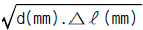
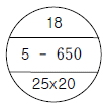
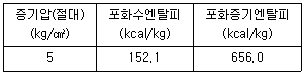
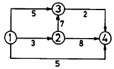
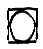
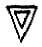
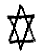
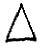
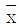
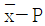

에너지관리기능장 (2004-04-04 기출문제)
1과목: 임의 구분
1. 오일 버너가 구비하여야 할 사항으로 틀린 것은?
- 넓은 부하 범위에 걸쳐 연속적으로 양호한 안정 무화를 얻을 수 있을 것
- 무화시 버너의 기름 분무각도가 될 수 있는 한 변화하는 구조일 것
- 양질인 경질유에서 고점도의 조악 중유까지 사용할 수 있도록 연료유 사용범위가 넓을 것
- 분무구의 교환이나 청소가 쉬운 구조이고, 소음발생이 적을 것
(정답률: 92%)

2. 다음 오일(oil)연소용 버너 중 유량조절 범위가 가장 넓은 것은?
- 유압식 버너
- 저압공기식 버너
- 회전식 버너
- 고압기류식 버너
(정답률: 83%)
3. 수관식 보일러에서 전열면의 증발율(Be1)을 구하는 식은?
- Be1= 총증발량/전열면적
- Be1= 매시증발량/전열면적
- Be1= 전열면적/총증발량
- Be1= 전열면적/매시증발량
(정답률: 81%)
4. 다음 집진장치 중 집진효율이 가장 좋은 것은?
- 중력 집진장치
- 관성력 집진장치
- 세정식 집진장치
- 전기 집진장치
(정답률: 90%)
5. 중유 연소시 검댕의 발생을 방지하는 방법으로 부적합한 것은?
- 연소용 공기를 예열 공급한다.
- 과잉 공기량을 적절히 조절한다.
- 불꽃이 수냉벽에 닿지 않게 한다.
- 황 함유량이 낮은 중유를 사용한다.
(정답률: 68%)
6. 노통 보일러에서 노통을 편심으로 하는 이유는?
- 노통의 설치가 간단하므로
- 노통의 설치에 제한을 받으므로
- 물순환을 좋게 하기 위하여
- 공작이 쉬우므로
(정답률: 90%)
7. 다음 물질 중 열의 전도도가 가장 낮은 것은?
- 동(Cu)
- 철
- 강
- 스케일
(정답률: 89%)
8. 수관보일러 중 자연순환 보일러에 속하는 것은?
- 라몬트보일러
- 베록스보일러
- 벤손보일러
- 바브콕 보일러
(정답률: 74%)
9. 수관보일러의 상부드럼은 고정하는데 반하여 하부드럼은 고정하지 않고 어느 정도 간격을 두는 이유는?
- 열팽창을 고려하여
- 보일러수의 순환을 원활히 하기 위하여
- 수격작용을 방지하기 위하여
- 진동을 감쇄시키기 위하여
(정답률: 70%)
10. 보일러 산세정 후 중화 방청처리하는 경우 사용하는 약품이 아닌 것은?
- 히드라진
- 인산소다
- 탄산소다
- 인산칼슘
(정답률: 54%)
11. 신설 보일러의 소다 끓임(soda boiling)에 사용되는 약품이 아닌 것은?
- 탄산소다(Na2CO3)
- 아황산소다(Na2SO3)
- 가성소다(NaOH)
- 염화소다(NaCl)
(정답률: 51%)
12. 증기보일러에서 증기의 송기시 발생하는 수격작용을 방지하는 조치로 잘못된 것은?
- 공기가 고이는 곳에 공기 배출기를 설치한다.
- 응축수가 고이는 곳에 증기 트랩을 설치한다.
- 증기밸브를 열 때는 서서히 연다.
- 소량의 증기로 난관 조작 후 송기한다.
(정답률: 59%)
13. 자동제어의 종류 중 주어진 목표값과 조작된 결과의 제어량을 비교하여 그 차를 제거하기 위하여, 출력측의 신호를 입력측으로 되돌려 제어하는 것은?
- 피드 백 제어
- 시퀀스 제어
- 인터록 제어
- 가스케이드 제어
(정답률: 86%)
14. 강철제 증기보일러의 안전밸브 및 압력 방출장치의 크기는 호칭지름 25 A 이상이어야 하지만, 20 A 이상으로 할 수 있는 경우는?
- 최고사용압력이 0.2 MPa(2 kg/cm2) 인 보일러
- 최고사용압력이 1 MPa(10 kg/cm2)이고, 동체 안지름이 600 mm, 길이가 1000 mm 인 보일러
- 최대증발량이 4 t/h 인 관류보일러
- 최고사용압력이 1 MPa(10 kg/cm2)이고, 전열면적이 3 m2인 보일러
(정답률: 79%)
15. 보일러 증기온도 조절 방법으로 부적합한 것은?
- 과열 저감기를 사용한다.
- 배기가스를 재순환시킨다.
- 버너의 분무각도를 변경한다.
- 과열기 표면에 급수를 분사한다.
(정답률: 67%)
16. 중유 연소 보일러에서 단속 연소의 원인이 아닌 것은?
- 중유 속에 수분이 섞여 있는 경우
- 분무용 증기나 공기가 드레인을 함유하고 있는 경우
- 중유 속에 슬러지 등의 불순물이 섞여 있는 경우
- 공기예열기가 정상 작동하지 않는 경우
(정답률: 78%)
17. 보일러를 장기간 휴지하는 경우 어떤 보존방법이 좋은가?
- 만수 보존법
- 청관 보존법
- 소다 만수 보존법
- 건조 보존법
(정답률: 91%)
18. 보일러 청관제 약품 종류 중 고압 보일러의 탈산소제로 사용되는 것은?
- 히드라진
- 아황산소다
- 탄산소다
- 리그닌
(정답률: 59%)
19. 보일러수(水)의 이상 증발 예방대책으로 잘못된 것은?
- 보일러수의 블로우 다운을 적절히 한다.
- 보일러수의 급수처리를 엄격히 한다.
- 보일러의 수위를 약간 높혀서 운전한다.
- 증기밸브를 급개하지 않는다.
(정답률: 86%)
20. 대기압 하에서 펌프의 최대흡입 양정(揚程)은 이론상 몇 m 정도인가?
- 10 m
- 20 m
- 15 m
- 30 m
(정답률: 86%)
2과목: 임의 구분
21. 열량(熱量) 1 kcal 를 일로 환산하면 약 몇 N·m 인가?
- 427 N·m
- 4185 N·m
- 419 N·m
- 41 N·m
(정답률: 62%)
22. 원형 직관 속을 흐르는 유체의 손실수두에 대한 설명으로 잘못된 것은?
- 관의 길이에 비례한다.
- 속도수두에 반비례한다.
- 관의 내경에 반비례한다.
- 관 마찰계수에 비례한다.
(정답률: 62%)
23. 랭킨 사이클(Rankine cycle)의 작동과정을 옳게 나열한 것은?
- 단열압축 - 정압가열 - 단열팽창 - 정적냉각
- 단열압축 - 정압가열 - 단열팽창 - 정압냉각
- 단열압축 - 등적가열 - 등압팽창 - 정적냉각
- 단열압축 - 등온가열 - 단열팽창 - 정압냉각
(정답률: 73%)
24. 증기의 교축(throttle)시에 항상 증가하는 것은?
- 압력
- 엔트로피
- 엔탈피
- 열전달량
(정답률: 59%)
25. 루프형 신축곡관에서 곡관의 외경(d)이 25 mm 이고, 길이(L)가 1 m 일 때 흡수할 수 있는 배관의 신장(△ℓ)은? (단,

이다.)- 0.3 mm
- 0.75 mm
- 3 mm
- 7.5 mm
(정답률: 43%)
26. 보온관의 열관류율이 5.0 kcal/m2·h·℃, 관 1 m 당 표면적이 0.1 m2, 관의 길이가 50 m, 내부 유체온도 120 ℃, 공기온도 20 ℃, 보온 효율 80 % 일 때 보온관의 열손실은?
- 350 kcal/h
- 480 kcal/h
- 500 kcal/h
- 530 kcal/h
(정답률: 52%)
27. 고압배관용 탄소강 강관의 KS기호는?
- SPPH
- SPHT
- SPPS
- SPPW
(정답률: 83%)
28. 증기 또는 온수가 흐르는 수평 배관에 사용되는 레듀샤의 형태는?
- 동심형(同心形)
- 편심형(偏心形)
- 만곡형
- 절곡형
(정답률: 84%)
29. 증기배관에 감압밸브 설치시 고압측과 저압측의 적합한 압력차는? (단, 이 때 고압측의 압력은 7 kg/cm2 이상이다.)
- 3:1 이내
- 4:1 이내
- 5:1 이내
- 2:1 이내
(정답률: 67%)
30. 증기배관의 신축 이음장치에서 고장이 가장 적고 고압에 잘 견디는 것은?
- 벨로즈형
- 단식 슬리브형
- 복식 슬리브형
- 루프형
(정답률: 80%)
31. 증기배관 도중에 밸브를 설치하는 경우 일반적으로 어떤 밸브를 설치하는가?
- 첵크밸브
- 글로브 밸브
- 슬루스 밸브
- 앵글밸브
(정답률: 69%)
32. 금속 열처리 중 재료를 가열하였다가 급냉시켜 경도를 높이는 것은?
- 뜨임(tempering)
- 담금질(quenching)
- 풀림(annealing)
- 불림(normalizing)
(정답률: 82%)
33. 방수처리되지 않은 그라스울(glass wool, 유리면) 보온재의 안전사용온도는?
- 300 ℃ 이하
- 450 ℃ 이하
- 600 ℃ 이하
- 800 ℃ 이하
(정답률: 69%)
34. 에너지이용합리화법상 열사용 기자재인 것은?
- 한국전력공사에서 사용하는 발전용 보일러
- 서울시 지하철에 사용되는 전기기관차
- 외국인 투자 관광호텔에 설치하기 위하여 외국에서 수입하는 난방용 보일러
- 선박 안전법에 의하여 검사를 받는 선박용 유류보일러
(정답률: 67%)
35. 국내외 사정으로 인하여 에너지 수급에 중대한 차질이 발생하거나 발생할 우려가 있을 경우 이에 효과적으로 대처하기 위하여 비상시 에너지수급계획을 수립하는데, 누가 하는가?
- 행정자치부 장관
- 산업자원부 장관
- 건설교통부 장관
- 에너지관리공단이사장
(정답률: 84%)
36. 연강용 피복 아크 용접봉 심선의 5가지 주요 화학성분 원소는?
- C, Si, Mn, P, S
- C, Si, Fe, N, H
- C, Si, Ca, N, H
- C, Si, Pb, N, H
(정답률: 88%)
37. 내화물의 스폴링(박락)종류가 아닌 것은?
- 열적 스폴링
- 구조적 스폴링
- 화학적 스폴링
- 기계적 스폴링
(정답률: 81%)
38. 25 ℃ 의 물 5 kg 을, 1기압, 100 ℃ 의 건조포화증기로 만들때 필요한 열량은? (단, 1기압에서 물의 증발잠열은 539 kcal/kg 이다.)
- 2695 kcal
- 3070 kcal
- 4120 kcal
- 5390 kcal
(정답률: 49%)
39. 관지지 금속 중 배관의 열팽창에 의한 좌우, 상하 이동을 구속하고 제한하는 장치는?
- 행거
- 서포트
- 리스트레인트
- 브레이스
(정답률: 83%)
40. 다음 방열기 표시 기호의 설명으로 잘못된 것은?

- 이 방열기의 쪽수는 18개이다.
- 5는 5세주형 방열기의 표시기호이다.
- 방열기의 높이(치수)가 650 mm이다.
- 유출 관경은 25 A, 유입 관경은 20 A 이다.
(정답률: 75%)
3과목: 임의 구분
41. 순수한 카바이드 1 kg 에서 이론적으로 몇 ℓ 의 아세틸렌이 발생하는가?
- 676 ℓ
- 384 ℓ
- 483 ℓ
- 348 ℓ
(정답률: 44%)
42. 일반적으로 기체의 체적을 일정하게 하고 온도를 높이면 압력은 어떻게 변화하는가?
- 증가한다.
- 감소한다.
- 변하지 않는다.
- 감소하다가 증가한다.
(정답률: 71%)
43. 유체에서 체적탄성계수의 단위는?
- N/m2
- m2/N
- N · m
- N/m3
(정답률: 74%)
44. 다음 중 단위 중량당 엔탈피(enthalpy)가 가장 큰 것은?
- 과냉각액
- 과열증기
- 포화증기
- 습포화증기
(정답률: 70%)
45. 보일러 연소시 화염의 유무를 검출하는 연소안전장치인 플레임아이에 사용되는 검출 소자가 아닌 것은?
- CuS셀
- 광전관
- CdS셀
- PbS셀
(정답률: 84%)
46. 보일러 급수 중의 용존(해) 고형분을 처리하는 방법이 아닌 것은?
- 가성소다법
- 석회소다법
- 응집침강법
- 이온교환법
(정답률: 57%)
47. 버킷 트랩 사용시 트랩 수봉이 파괴되어 증기가 분출되는 현상이 계속될 경우의 대책은?
- 오리피스를 작은 것으로 교체한다.
- 밸브시트에 부착된 오물을 긁어 낸다.
- 배압이 높으므로 낮추어준다.
- 밸브 시트를 교체한다.
(정답률: 63%)
48. 절대압력 5 kg / cm2인 상태로 운전되는 보일러의 증발량이 시간당 5000 kg 이었다면, 이 보일러의 상당증발량은? (단, 이 때 급수온도는 30 ℃ 이었고, 발생증기의 건도는 98 % 이었으며, 증기표 값은 다음과 같다.)

- 5714 kg/h
- 5807 kg/h
- 5992 kg/h
- 6085 kg/h
(정답률: 30%)
49. 증기난방에서 응축수 환수의 리프트 배관(lift fitting)에 대한 설명으로 잘못된 것은?
- 진공환수식에서 환수관 도중에 입상관이 있는 경우 물을 흡상하기 위해 설치한다.
- 동파의 위험이 있는 곳에는 리프트 배관의 설치가 불가능하다.
- 1 단당 1.5 m 정도 흡상이 가능하므로 그 이상 흡상이 필요한 경우에는 단수를 늘려야 한다.
- 고압증기관에서도 증기트랩의 종류에 영향을 받지 않는 장점이 있다.
(정답률: 45%)
50. 두께 30 mm 인 보온판의 열전도율이 0.06 kcal/m·h·℃이다. 이 판에서 단위면적당 전도되는 열량이 60 kcal/h 일 때 이 보온판의 내외부 표면 온도차는?
- 20 ℃
- 30 ℃
- 40 ℃
- 60 ℃
(정답률: 51%)
51. 보일러수에 용해염류가 다량 있을 때 가장 적절한 수처리 방법은?
- 침전법
- 탈기법
- 가열법
- 석회소다법
(정답률: 52%)
52. 연료가 유류인 온수 보일러의 형식별 사용 버너를 짝지은 것 중 잘못된 것은?
- 압력 분무식 : 건타입 (gun type)
- 증발식 : 포트식 (pot type)
- 회전 무화식 : 노즐식 (nozzle type)
- 낙차식 : 심지고정 낙차식
(정답률: 57%)
53. 어떤 온수방열기의 입구온도가 85 ℃, 출구온도가 60 ℃ 이고, 실내온도가 20 ℃ 이다. 난방부하가 28000 kcal/h 일 때 필요한 방열기 쪽수는? (단, 방열기 쪽당 방열면적은 0.21 m2, 방열계수는 7.2 kcal/m2·h·℃ 이다.)
- 297쪽
- 353쪽
- 424쪽
- 578쪽
(정답률: 33%)
54. 보일러 운전중의 사고와 방지대책에 관한 설명으로 잘못된 것은?
- 과열사고는 주로 스케일 부착에 의한 것과 저수위 사고로 분류한다.
- 점식은 외부부식 중 한가지로서 산화부식이라고도 한다.
- 저수위가 되어 보일러가 과열되면 즉시 연료 공급을 중단한다.
- 압력초과, 과열, 부식 등의 현상은 보일러 취급상의 결함으로서 과도하면 파열 사고를 초래한다.
(정답률: 73%)
55. 샘플링 검사의 목적으로서 틀린 것은?
- 검사비용 절감
- 생산공정상의 문제점 해결
- 품질향상의 자극
- 나쁜 품질인 로트의 불합격
(정답률: 51%)
56. 월 100대의 제품을 생산하는데 세이퍼 1대의 제품 1대당 소요공수가 14.4 H 라 한다. 1일 8 H, 월 25일, 가동한다고 할 때 이 제품 전부를 만드는데 필요한 세이퍼의 필요대수를 계산하면? (단, 작업자 가동율 80 %, 세이퍼 가동율 90 % 이다.)
- 8대
- 9대
- 10대
- 11대
(정답률: 43%)
57. 다음의 PERT/CPM에서 주공정(Critical path)은? (단, 화살표 밑의 숫자는 활동시간을 나타낸다.)

- ① - ③ - ② - ④
- ① - ② - ③ - ④
- ① - ② - ④
- ① - ④
(정답률: 63%)
58. 제품공정분석표에 사용되는 기호 중 공정간의 정체를 나타내는 기호는?




(정답률: 60%)
59. TQC (Total Quality Control)란?
- 시스템적 사고방법을 사용하지 않는 품질관리 기법이다.
- 아프터 서비스를 통한 품질을 보증하는 방법이다.
- 전사적인 품질정보의 교환으로 품질향상을 기도하는 기법이다.
- QC부의 정보분석 결과를 생산부에 피드백하는 것이다.
(정답률: 74%)
60. 계수값 관리도는 어느 것인가?
- R관리도

관리도- P관리도

관리도
(정답률: 56%)